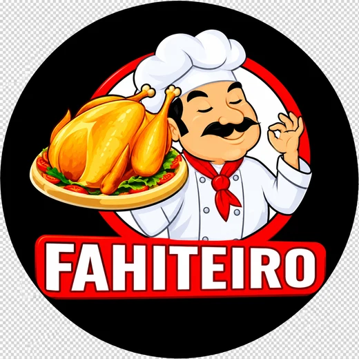
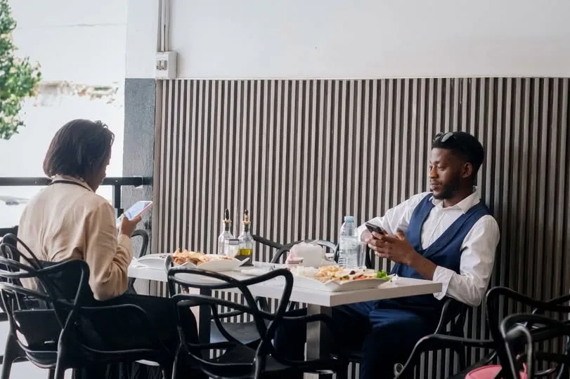
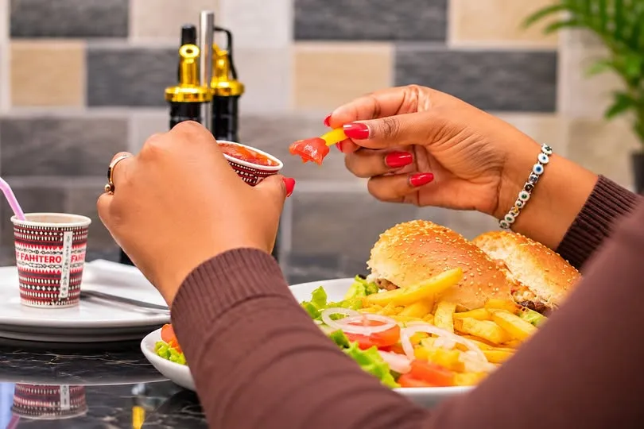
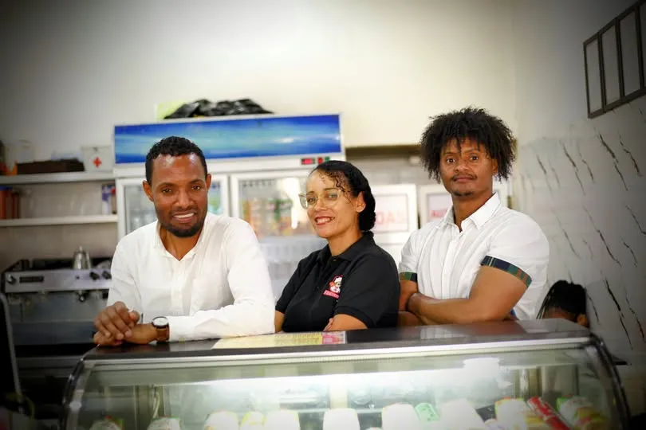

Restaurante Fahiteiro
Sabores que aproximam, momentos que ficam.
Bem-vindo ao Restaurante Fahiteiro, onde o sabor e os bons momentos se encontram. Descubra a nossa identidade gastronómica Tex-Mex e conheça um espaço pensado para aproximar pessoas através da experiência de comer.

Mais do que uma refeição, uma experiência de sabor.
O Restaurante Fahiteiro apresenta-se com a identidade Sabor Tex-Mex e uma proposta que valoriza os sabores e os momentos partilhados. Com o lema ‘Sabores que aproximam, momentos que ficam’, o Fahiteiro procura transmitir uma experiência acolhedora através da gastronomia.
Sabores que aproximam, momentos que ficam.
Fahiteiro | Sabor Tex-MexGaleria
Um olhar sobre o ambiente, a mesa e as pessoas do Restaurante Fahiteiro.


